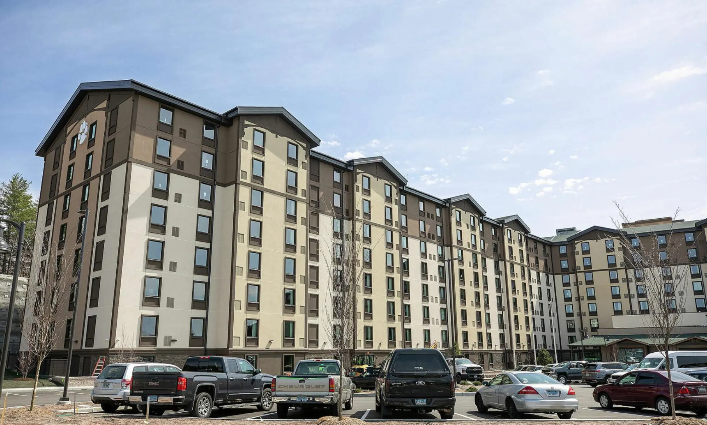
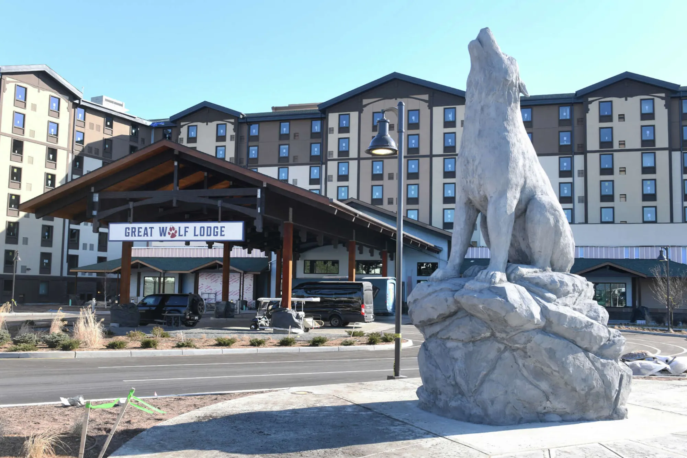
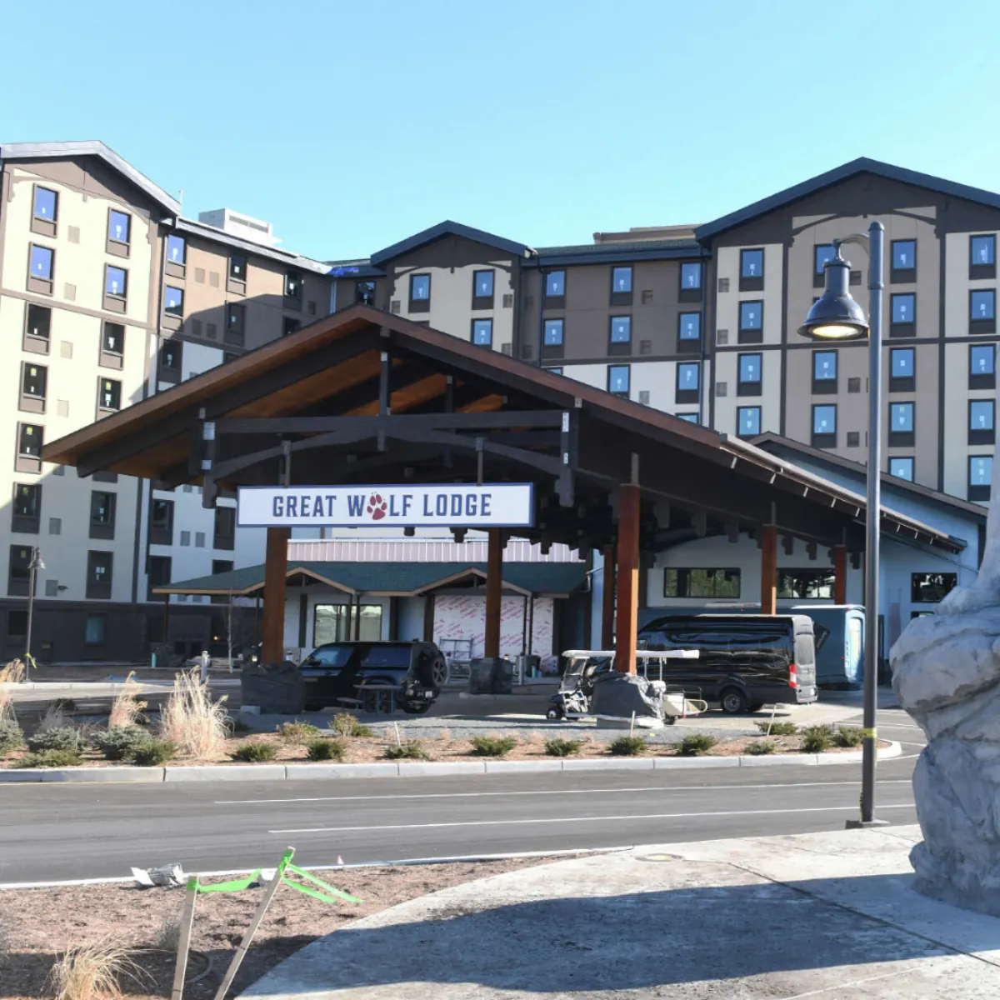
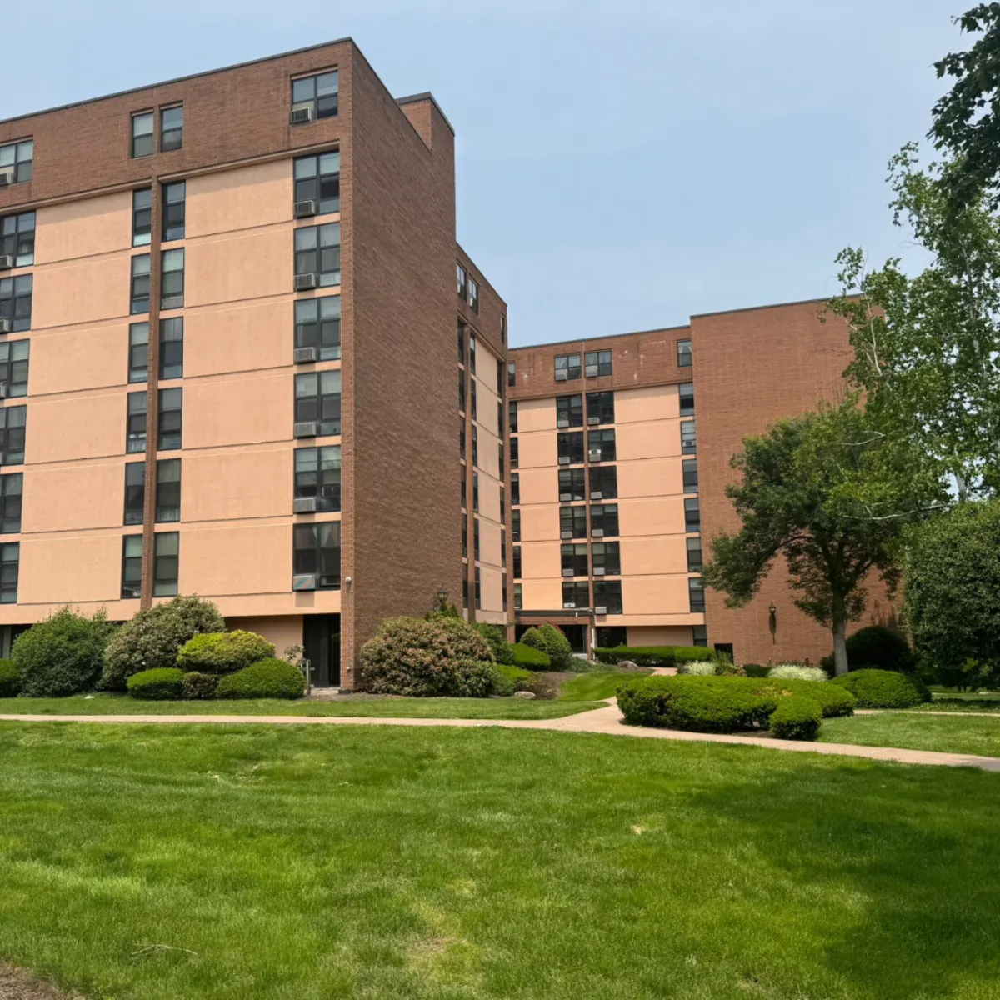
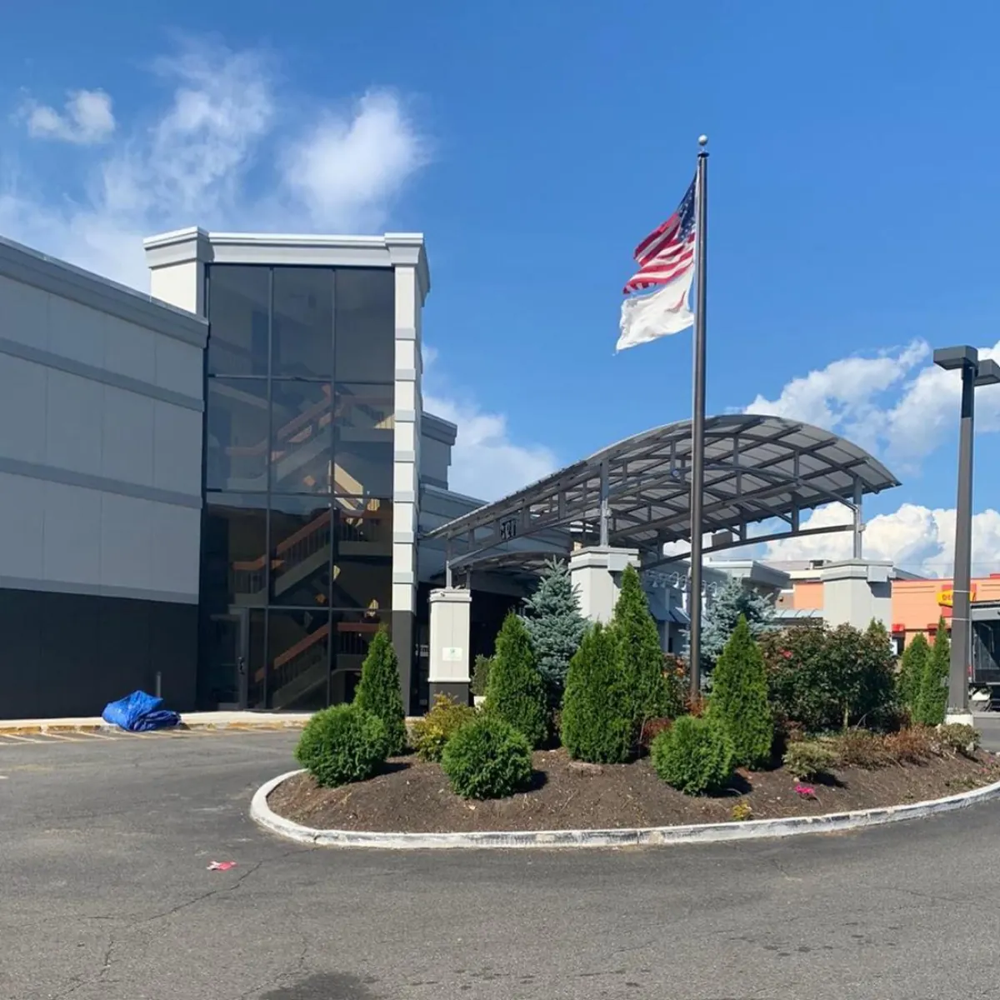
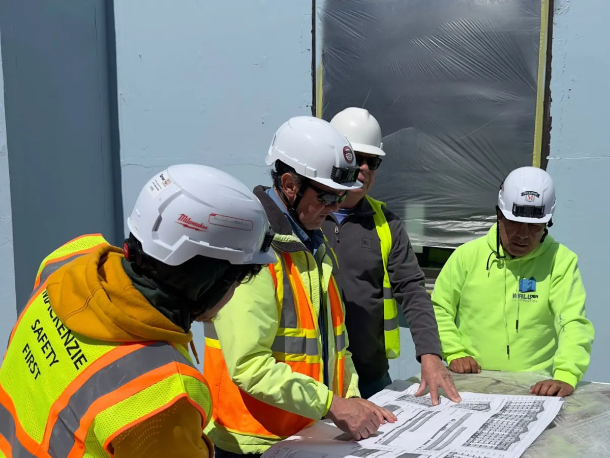
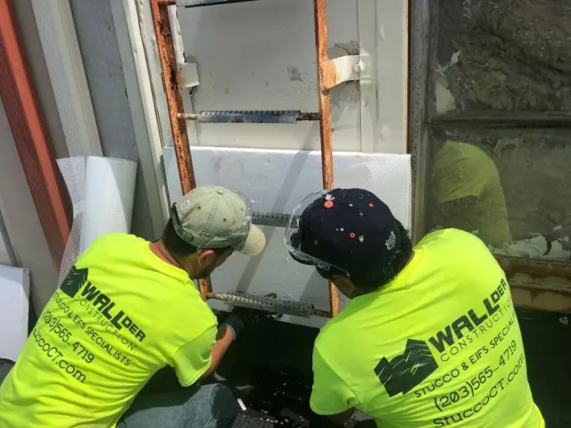

Estuco y EIFS comercial Commercial stucco and EIFS
Conoce Wallder Meet Wallder
Tipos de proyectos Project types




Capacidad y coordinación en obra Crew capacity and site coordination
Nos reunimos en persona We meet in person Vemos el trabajo contigo y revisamos qué hay que hacer. We look at the project with you and review what needs to be done. Recibes una propuesta por escrito You get a written proposal Te enviamos una propuesta por escrito para el trabajo. We send you a written proposal for the work. Hacemos el trabajo y limpiamos We do the work and clean up Cuando apruebas la propuesta, hacemos el trabajo y dejamos el lugar limpio. Once you approve the proposal, we do the work and leave the site clean.
Great Wolf Lodge
Connecticut
Aplicadores certificados Certified applicators
Servicios Services

Reparación de estuco Stucco repair

Reparación de filtraciones y daños por humedad Leak and moisture damage repair

EIFS
Mampostería y revestimiento de piedra Masonry and stone veneer

Acabados y cambio de color Finishes and color changes
Reseñas de clientes Customer reviews
«He trabajado con Walder Construction en varios proyectos comerciales. El trabajo ha sido de muy buena calidad, han cumplido con las fechas y han respondido rápido.» “Have been working with Walder Construction in several commercial projects with a very good quality of work, meeting schedule dates and quick response .”
«Fueron muy pacientes y me ayudaron con todas mis preguntas y preocupaciones. Son de lo más profesionales y hacen un gran trabajo. Los recomiendo mucho.» “Extremely patient and helpful with all my questions and concerns. Professional as they come and great work! Highly recommend”
«Hemos trabajado con Wallder Construction durante muchos años con muy buenos resultados. Tiene equipos bien preparados para todo, desde proyectos de varios millones de dólares hasta reparaciones sencillas. Es aplicador certificado de Parex y contratista profesional en piedra, ladrillo delgado y pisos. Nuestra experiencia con Wallder ha sido excelente.» “We have been doing business with Wallder Construction for many years with great success. He is well equipped with crews for multi million dollar projects to simple repairs. He is a certified Parex Applicator and also a professional stone, thin brick and flooring contractor. Our experience with Wallder has been great”